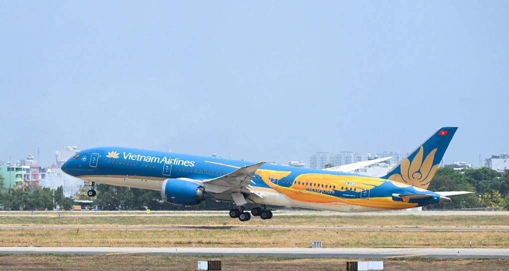

Các hãng hàng không Việt Nam đồng loạt mở thêm đường bay quốc tế tới Trung Quốc, Nhật Bản, Đông Nam Á và châu Âu, nhằm đón nhu cầu du lịch và giao thương tăng cao dịp hè 2026.
Tại hội nghị xúc tiến hợp tác Việt Nam - Trung Quốc, Vietjet Air công bố 5 đường bay mới gồm Hà Nội - Hàng Châu, Hà Nội - Ân Thi, Hà Nội - Hoàng Sơn, TP HCM - Quế Lâm và TP HCM - Hoàng Sơn. Trong đó, hai tuyến Hà Nội - Ân Thi và TP HCM - Quế Lâm đã khai thác từ đầu tháng 4, các đường bay còn lại dự kiến mở trong thời gian tới. Theo đại diện hãng, việc mở rộng mạng bay giúp tăng kết nối tới các điểm đến có tiềm năng du lịch như Hoàng Sơn, Quế Lâm, đồng thời phục vụ nhu cầu giao thương giữa các trung tâm kinh tế. Vietjet Air hiện duy trì các đường bay tới nhiều thành phố lớn của Trung Quốc như Bắc Kinh, Thượng Hải, Thành Đô, Tây An và Quảng Châu. Ngoài Trung Quốc, hãng này tiếp tục mở rộng sang Nhật Bản và Đông Nam Á. Đường bay Hà Nội - Shizuoka dự kiến khai trương từ 28/4 với tần suất 3 chuyến khứ hồi mỗi tuần. Hai đường bay Đà Nẵng - Jakarta và Nha Trang - Singapore dự kiến khai thác từ cuối tháng 4 và đầu tháng 6, với tần suất lần lượt 5 và 4 chuyến khứ hồi mỗi tuần. Vietnam Airlines mở rộng mạng bay đường dài khi công bố đường bay thẳng Hà Nội - Amsterdam từ ngày 16/6, với tần suất 3 chuyến khứ hồi mỗi tuần bằng tàu bay Airbus A350. Đây là đường bay thẳng đầu tiên giữa Việt Nam và Hà Lan, giúp rút ngắn thời gian di chuyển và tăng khả năng kết nối tới một trong những trung tâm logistics lớn của châu Âu. Sau khi khai thác tuyến này, Vietnam Airlines sẽ có 12 đường bay thẳng tới châu Âu, kết nối 8 điểm đến gồm Paris, Frankfurt, London, Munich, Milan, Copenhagen, Moscow và Amsterdam, qua đó mở rộng khả năng kết nối với các trung tâm kinh tế lớn. Trước đó đầu tháng 4, hãng cũng đã khai thác đường bay TP HCM - Phuket với tần suất 5 chuyến mỗi tuần, phục vụ nhu cầu du lịch giữa hai điểm đến nghỉ dưỡng trong khu vực. Vietravel Airlines tập trung vào Đông Nam Á khi khôi phục đường bay Hà Nội - Bangkok từ ngày 24/4 đến 24/10, với tần suất một chuyến mỗi ngày, nhằm đáp ứng nhu cầu đi lại giữa hai thị trường gần Sun PhuQuoc Airways, hãng hàng không mới khai thác thương mại từ cuối năm 2025, cũng nhanh chóng mở rộng mạng bay quốc tế. Trong năm 2026, hãng dự kiến khai thác 9 đường bay tới 7 thị trường gồm Đài Loan, Hàn Quốc, Singapore, Thái Lan, Hong Kong, Ấn Độ và Malaysia. Chuyến bay Phú Quốc - Đài Bắc đã khai thác từ ngày 29/3, tiếp đó là chặng Phú Quốc - Seoul từ ngày 17/4. Theo các chuyên gia, việc nhiều hãng đồng loạt mở rộng mạng bay cho thấy tín hiệu phục hồi rõ rệt của ngành hàng không, đồng thời phản ánh chiến lược cạnh tranh bằng việc gia tăng độ phủ điểm đến và kết nối quốc tế. Số liệu của Cục Hàng không Việt Nam cho thấy trong quý 1/2026, thị trường vận tải hàng không đạt 24,1 triệu lượt khách, tăng 16% so với cùng kỳ năm trước. Trong đó, khách nội địa đạt 10,2 triệu, tăng 12%, còn vận chuyển quốc tế đạt 13,9 triệu lượt, tăng 19%, với các thị trường lớn gồm Trung Quốc, Hàn Quốc, Nga, Đài Loan, Nhật Bản, Mỹ, Ấn Độ, Australia, Campuchia, Philippines và Malaysia. ← Quay lại